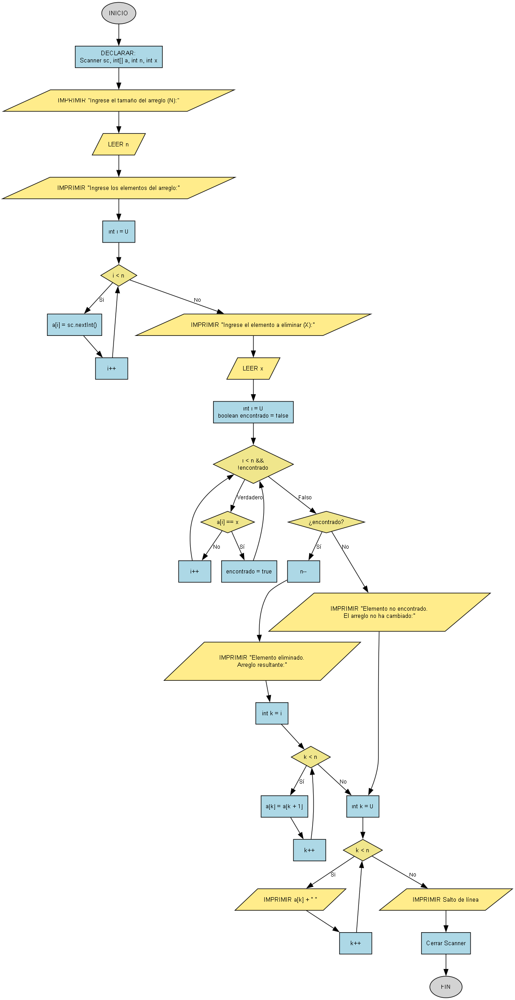

Eliminar Elemento (Arreglo Desordenado)
Escribe un programa que pida al usuario una lista de números (un arreglo), y luego le permita eliminar un número específico de esa lista.

Requisitos
Todo el código debe estar dentro del método main.
- Pide el tamaño del arreglo con el texto:
"Ingrese el tamaño del arreglo (N): ". - Pide los elementos del arreglo con el texto:
"Ingrese los [n] elementos del arreglo:". - Pide el elemento a eliminar con el texto:
"Ingrese el elemento a eliminar (X): ". - Busca la primera aparición del elemento a eliminar en el arreglo.
- Si lo encuentras, "elimínalo" desplazando los elementos que están a su derecha una posición a la izquierda.
- Imprime el mensaje de confirmación:
"Elemento eliminado. Arreglo resultante:". - Si no lo encuentras, imprime el mensaje:
"Elemento no encontrado. El arreglo no ha cambiado:". - Al final, imprime los elementos del arreglo resultante en una sola línea, separados por espacios.
Ejemplo de uso esperado
Ingrese el tamaño del arreglo (N): 5
Ingrese los 5 elementos del arreglo:
10
20
30
40
50
Ingrese el elemento a eliminar (X): 30
Elemento eliminado. Arreglo resultante:
10 20 40 50
Ingrese el tamaño del arreglo (N): 3
Ingrese los 3 elementos del arreglo:
1
2
3
Ingrese el elemento a eliminar (X): 99
Elemento no encontrado. El arreglo no ha cambiado:
1 2 3